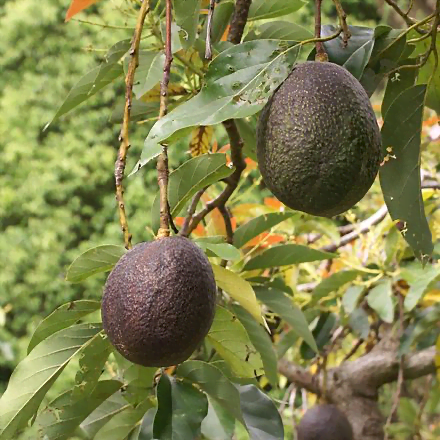

Avocados wiki knowledge
Avocados are commercially valuable and are cultivated in tropical and Mediterranean climates throughout the world.[2] They have a green-skinned, fleshy body that may be pear-shaped, egg-shaped, or spherical. Commercially, they ripen after harvesting. Avocado trees are partially self-pollinating, and are often propagated through grafting to maintain predictable fruit quality and quantity.[6] In 2017, Mexico produced 34% of the world supply of avocados.